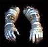

|  |
|
|
|
|
This item is found on level 2 or deeper, and is "Common".
(Commonality value of 45)
This item can be dropped by:
Skuldragl, Slave Driver, Troll, Elf, Dwarf, Dwarven Guard, Dwarven Lord, Sprite, Gumon, Lost Soul, Jestor, Gorguni, Coltpixie, Shadow Ogre, Red Cloak Assassin, Jubilex, Dimeon, Daemon, Shadow of Death, Daemon Lord, Nan-Shuma, Screaming Devil, Hennart, Ice Mist, Phantasmal Mist, Giant Serpent, Pit Viper, Rattlesnake, Giant I'ssus, Gythyek Lizard, Black Grengi, Shadow Serpent, Slither, Firagon, Mundragon, Spectral Dragon, Dragon Queen, Sun Dragon, Razor Boar, Spotted Tyke, Giant Boar, Havannan Lion, Grey Pandrun, Giant Wolverine, Rabid Snook, Silver Bear, Yundrun, Brown Bear, Iron Bear, Death Stalker, Giant Beetle, Giant Ant, Giant Scorpion, Fire Centipede, Wolf Spider, Mummy, Walking Corpse, Spook, Evil Spirit, Drakul, Minion of Death, Lich, Vampire Lord, Kyu Hota, Lamurian Lord, Geeshi, Fire Golemn, Lava Giant, Shadow Golem, Sistrum, Grostrum, Green Gremlin, Ancient Guardian, Wererat, Wereboar, Phase Beast, Werebear, Thug, Pickpocket, Cutpurse, Gredlan Footpad, Thief, Pinyl, Slayer, Barbarian, Butcher, Swordsman, Holy Warrior, Master Swordsman, T'Butu, T'Lanea,
Use your browser's BACK button to get back